Version Control Strategies
Agile
In iterative development methodologies like Agile, the unit of change is a user story, or just "story".
- Branch is created for the story (feature).
- Merged when the story is complete.
- Releasable code after merge to main branch.
GitFlow
GitFlow is one iterative branching strategy that uses
two main branches: main and develop...

Continuous
In continuous development methodologies like DevOps, the unit of change is a commit.
- Short-lived branches are created for a small unit of change.
- Changes are merged as soon as possible, often multiple times a day.
- Releasable code is ensured after each commit.
Trunk Based Development
Trunk Based Development is a continuous branching strategy that uses a single main branch (trunk).
